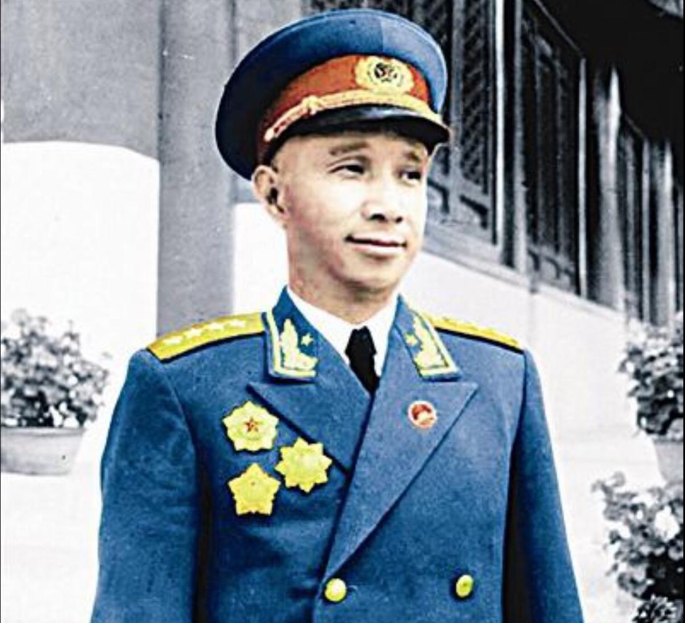

难以忘怀，善美造化
粟裕
（1907-1984）
全国人大常委会副委员长,中国人民解放军大将,总参谋长。
湖南省会同县人,侗族，1907年8月10日生于会同县伏龙乡枫木树脚村。1926年入常德湖南省立第二师范,积极从事-。同年11月加入中国共产主义青年团。在大革命失败的严峻关头,毅然投笔从戎。1927年5月一天深夜,他从学校下水道里逃出,日夜兼程赶到武昌,参加了党领导的叶挺部二十四师,任教导队学员班长。6月转为中国共产党党员。8月1日参加南昌起义。起义部队进军潮汕失败后,他坚定不移地继续跟随朱德、陈毅艰难转战。1928年1月参加湘南起义。4月,跟随朱德、陈毅上井冈山,与毛泽东率领的红军会师。他参加了保卫井冈山革0据地斗争和创建中央革0据地及其历次反“围剿”斗争。1930年12月任六十五师师长。在第一次反“围剿”中,毛泽东、朱德采纳他提出的“诱敌十八师张辉瓒部至龙冈处予以歼灭”的建议,全歼张部,活捉了张辉瓒。从井冈山到中央苏区,他跟随毛泽东学习战争指挥艺术,从一名红军的基层指挥员锻炼成长为优秀的高级指挥员。他作战勇敢,指挥果断。1933年5月,在硝石战斗中,亲率部队冲锋,手臂中弹致残。一生共6次负伤。第五次反“围剿”斗争失败后,他任红军北上抗日先遣队参谋长,协助军团长寻淮洲率部北上抗日,执行战略牵制任务。先遣队在怀玉山失利后,他遵中央指示,率部挺进浙江。因唯一的一部电台被打坏,在同党中央和上级党组织失去联系情况下,他率部开始了艰苦卓绝的浙南三年游击战争。
抗日战争爆发后,他任新四军第二支队副司令员。1938年4月,他率新四军先遣支队挺进江南敌后。6月,在卫岗首战告捷。这是新四军挺进江南的第一战,沉重打击了日军的嚣张气焰,破除了日军不可战胜的神话,显示了新四军的军威。1939年11月后,陈毅和他先后分别任新四军江南、苏北指挥部正副指挥。1940年10月,他指挥了著名的黄桥决战。皖南事变后,他任新四军第一师师长兼政委,后又兼任苏中军区司令员、政委和苏中区党委书记。他领导苏中军民粉碎了敌人频繁的“扫荡”和“清乡”,度过了抗日战争最艰难的阶段。战略-开始后,他率部出击,攻克敌据点30余处,沉重地打击了日军,巩固和发展了苏南、浙东抗日根据地,开创浙西抗日根据地。刘少奇曾说:“粟裕领导的新四军第一师在抗日战争中建立了最大的功劳。在我军中以第一师部队作战最多,战果最大。”
抗战胜利后,任华中军区副司令员、华中野战军司令员。1946年6月,蒋介石发动内战。他随即出色地指挥了七战七捷的苏中战役,粉碎了四倍于我的敌人向苏中解放区的进攻。10月,山东、华中两大野战军会合后,他挑起了华东战场战役指挥的重担,胜利地指挥了一系列重大战役,充分发挥了善于组织大兵团作战的指挥才能。12月,他指挥宿北战役,全歼来犯之敌六十九师。1947年1月,指挥鲁南战役,全歼来犯之敌两个师和一个快速纵队,并用缴获的重型美械装备,组建了解放军第一支特种兵纵队。2月,指挥莱芜战役,创造了3天歼敌7个师的新纪录,收复城市13座,粉碎了敌人的南北夹击。5月,指挥孟良崮战役,全歼国民党“五大主力”之一的七十四师,击毙敌中将师长张灵甫,挫败了敌人对山东的重点进攻,震撼了南京蒋家王朝。9月,指挥沙土集战役,全歼敌五十七师,生俘敌中将师长段霖茂。陈毅对其战役指挥艺术非常称道:“粟裕将军的战役指挥,一贯保持常胜纪录,越出越奇,越打越妙。”
